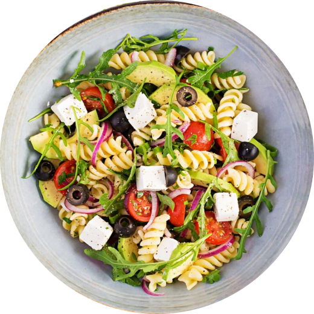

Ensalada Mediterránea
Tiempo de preparación: 15 minutos
Porciones: 4
Ingredientes:
- 200g de pasta fusilli integral
- 1 pepino mediano, cortado en cubos
- 200g de tomates cherry, cortados por la mitad
- 100g de aceitunas negras, sin hueso
- 150g de queso feta, desmenuzado
- 1/2 cebolla roja, finamente picada
- 2 cucharadas de aceite de oliva extra virgen
- 1 cucharada de vinagre balsámico
- 1 cucharadita de orégano seco
- Sal y pimienta al gusto
Instrucciones:
- Cocina la pasta según las instrucciones del paquete. Escurre y deja enfriar.
- En un tazón grande, combina la pasta fría con el pepino, los tomates cherry, las aceitunas, el queso feta y la cebolla roja.
- En un tazón pequeño, mezcla el aceite de oliva, el vinagre balsámico, el orégano, la sal y la pimienta para hacer el aderezo.
- Vierte el aderezo sobre la ensalada y mezcla suavemente para combinar todos los ingredientes.
- Refrigera por al menos 30 minutos antes de servir para que los sabores se integren.
Información Nutricional (por porción):
Calorías: 320
Proteínas: 12g
Carbohidratos: 35g
Grasas: 16g
Fibra: 5g